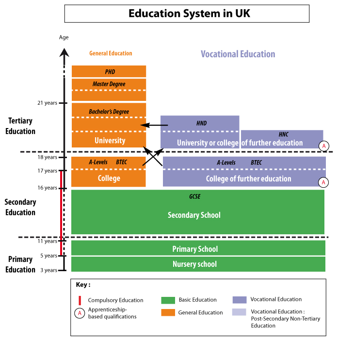
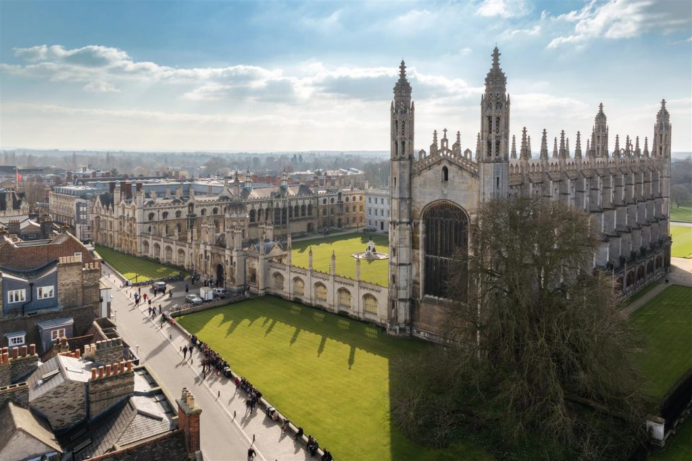

Stages
The education system in the UK is divided into four main parts, primary education, secondary education, further education and higher education. Children in the UK have to legally attend primary and secondary education which runs from about 5 years old until the student is 16 years old.
The education system in the UK is also split into "key stages" which breaks down as follows:
- Key Stage 1: 5 to 7 years old
- Key Stage 2: 7 to 11 years old
- Key Stage 3: 11 to 14 years old
- Key Stage 4: 14 to 16 years old
Students are assessed at the end of each stage. The most important assessment occurs at age 16 when students pursue their GCSE's or General Certificate of Secondary Education.

Primary Education
Primary education begins in the UK at age 5 and continues until age 11, comprising key stages one and two under the UK educational system.
From age 11 to 16, students will enter secondary school for key stages three and four and to start their move towards taking the
GCSE's. Primary and secondary education is mandatory in the UK; after age 16, education is optional.
n
Once a student finishes secondary education they have the option to extend into further education to take their A-Levels, GNVQ's, BTEC's or other such qualifications. UK students planning to go to college or university must complete further education.
The UK has a vast variety of higher education opportunities to offer students with over 100 universities offering various degree programs for students from the UK and around the world. In the UK about one-third of all students go on to some form of higher education and this number is well over 50% for students from Scotland. This makes competition for places very fierce and so it is advised to apply early for courses.
